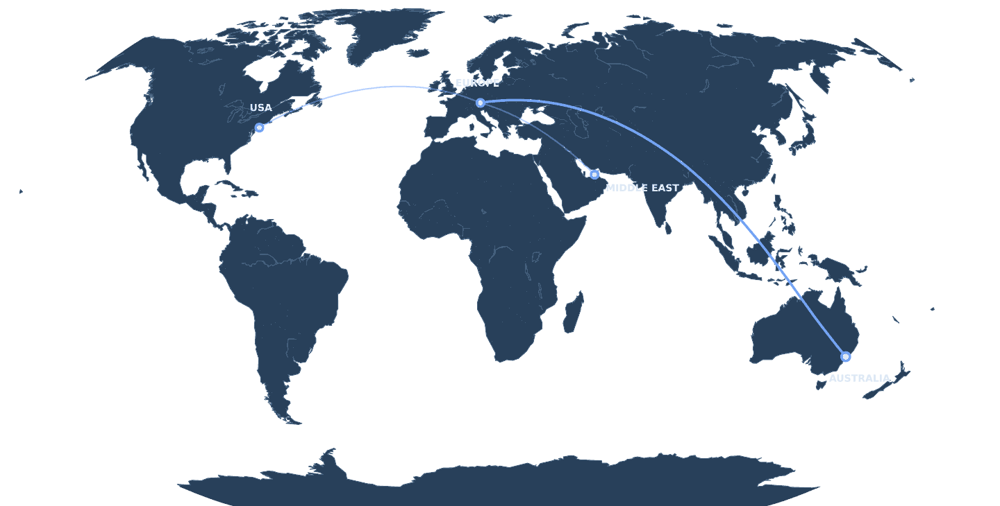

Gestione fornitori
Contatto quotidiano, monitoraggio della produzione e verifica della merce pronta.
Gestione logistica indipendente
Gestisco la tua supply chain internazionale dall'ordine di acquisto alla consegna finale, coordinando fornitori, vettori e ogni spedizione lungo il percorso.

EUROPA AUSTRALIA USA MEDIO ORIENTETu pensa al business
Dal coordinamento dei fornitori alla consegna finale, sono il tuo unico riferimento operativo: la logistica internazionale diventa più semplice, più efficiente e più prevedibile.
Scopri il processo →Contatto quotidiano, monitoraggio della produzione e verifica della merce pronta.
Vettore, rotta e tariffa giusti per ogni singola spedizione.
Mare, aria e strada gestiti dall'origine fino alla consegna.
Costi più bassi, lead time più corti e maggiore visibilità operativa.
La differenza
Senza un presidio dedicato
Con Logistream
Come lavoro
Uno strato operativo concreto fra i tuoi fornitori, i partner di trasporto e il team interno.
Requisiti e tempistiche verificati.
Produzione e merce pronta monitorate.
Rotte, vettori e tariffe selezionati.
Documenti export e doganali controllati.
Movimentazione via mare, aria o strada.
Sdoganamento e adempimenti locali gestiti.
Merce consegnata nei tempi e monitorata.
Costi e performance migliorati di continuo.
Competenza trasporti
Non sono legato a un solo vettore né a una sola soluzione. Ogni rotta viene valutata in base a costo, tempi, affidabilità e alle tue priorità commerciali.
Pianificazione FCL e LCL, ricerca tariffe, scelta del vettore e gestione booking.
Merce urgente e ad alto valore, con routing su misura e controllo dei costi.
Soluzioni FTL e LTL in Europa, coordinamento primo e ultimo miglio.
Soluzioni integrate costruite intorno alla spedizione, non alla modalità di trasporto.
Trade lane
La mia trade lane principale è Europa–Australia, con esperienza operativa diretta in entrambi i mercati. Gestisco inoltre spedizioni da e verso Stati Uniti, Medio Oriente e altre destinazioni internazionali.
Come collaboriamo
Ogni azienda ha bisogno di un supporto diverso. Perimetro e condizioni economiche si definiscono per iscritto prima di iniziare.
Per chi sospetta di pagare troppo, ma non riesce a dimostrarlo.
Perimetro Intervento una tantum, durata definita
Per i team che tengono la logistica in casa ma non hanno più ore a disposizione.
Perimetro Continuativo, su volume concordato
Per le aziende che vogliono togliersi la logistica dalla scrivania.
Perimetro Continuativo, intera funzione logistica
Come vengo pagato
Tre modi di strutturare il compenso. Scegliamo quello adatto ai tuoi volumi e alla loro prevedibilità, e lo mettiamo per iscritto prima della prima spedizione.

Chi sono
Fondatore e responsabile logistica
Ho più di dieci anni di esperienza operativa e manageriale nella logistica internazionale, fra Italia, Regno Unito e Australia. Oggi affianco le piccole e medie imprese come loro reparto logistica in outsourcing.
Lavoro direttamente con fornitori, spedizionieri e team interni per far sì che ogni spedizione trovi il giusto equilibrio fra costo, velocità e affidabilità.
Parliamone
Raccontami cosa importi o esporti, dove si muove la merce e cosa oggi ti porta via troppo tempo. Ti rispondo direttamente io.